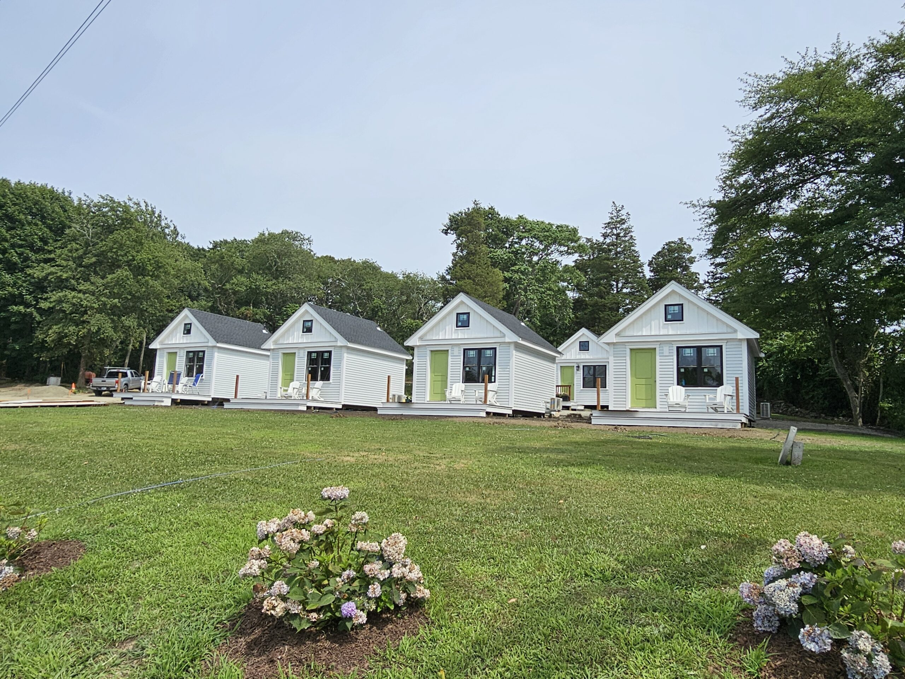

Come find your direction.
Book direct and stay at a property with nine decades of hospitality behind it.

From a 1930s motor court to a 2024 boutique cottage retreat — the same land, reimagined.
The roadside motor lodges became extremely popular when automobiles became accessible to many folks. Sunset Cabins opened on this land as one of the iconic stops along Aquidneck Island's western shore — welcoming families through every era of New England travel.
Generations of visitors fondly recall the warmth and camaraderie found inside the stone walls surrounding the cabins, as well as the countless adventures enjoyed amidst the natural splendor of the flora and landscape. The property continued as Twin Lanterns for decades.
Eric & Cris Offenberg, longtime friends of Kevin & Krissy Coristine, noticed the property as a different kind of opportunity. They pooled 30 years of real-estate, design, and hospitality experience and bought the land in late 2021.
Long-day trip from Rhode Island through Massachusetts, New Hampshire, Vermont, and New York — visiting tiny homes, modular cottages, glamping sites, and cabin parks. The name Weathervane was born from the weathervanes seen on every beautiful New England home along the way.
The business plan, marketing concept, and permitting took shape. Construction began in early 2024.
The first four cottages opened for business in August 2024. The Relax. Recline. Recharge. philosophy came to life.
The remaining four cottages, the four safari glamping tents, and the Bungalow opened in early 2025.
Longtime residents of Aquidneck Island with 30 years of experience in real estate, vacation rentals, and short-term property management. They brought the operational, financial, and design vision that took Weathervane from idea to opening day.
Partners, parents, and lifelong friends of the Offenbergs. Their expertise in hospitality, hosting, and creating spaces people want to come back to infused every corner of Weathervane — from the fire pits to the gardens.
When guests enter Weathervane, magic happens. They set aside their duties, responsibilities, and worries. They relax upon comfy beds in the sanctuary of their own tiny home. They recline peacefully to sleep the night away with unplugged phones and screens — to be recharged for the day ahead.
Book direct and stay at a property with nine decades of hospitality behind it.